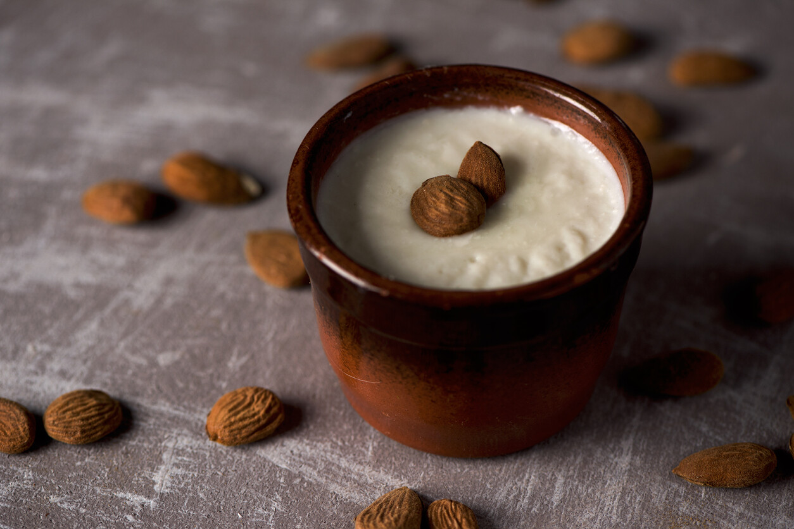
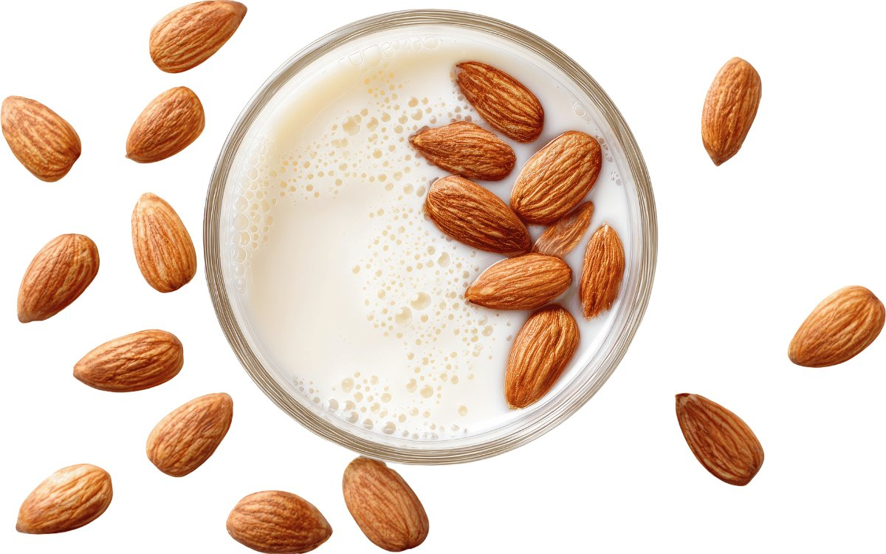
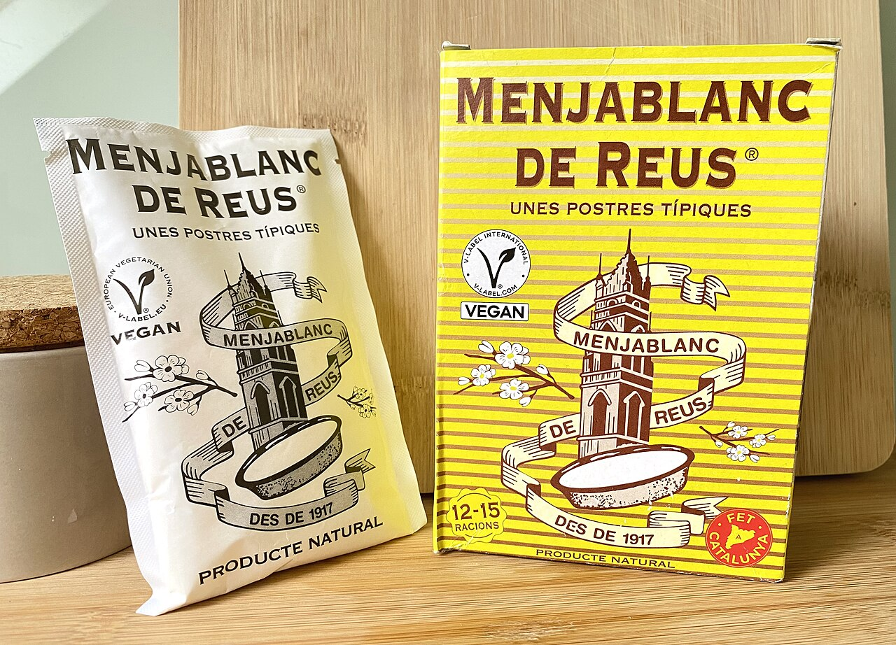
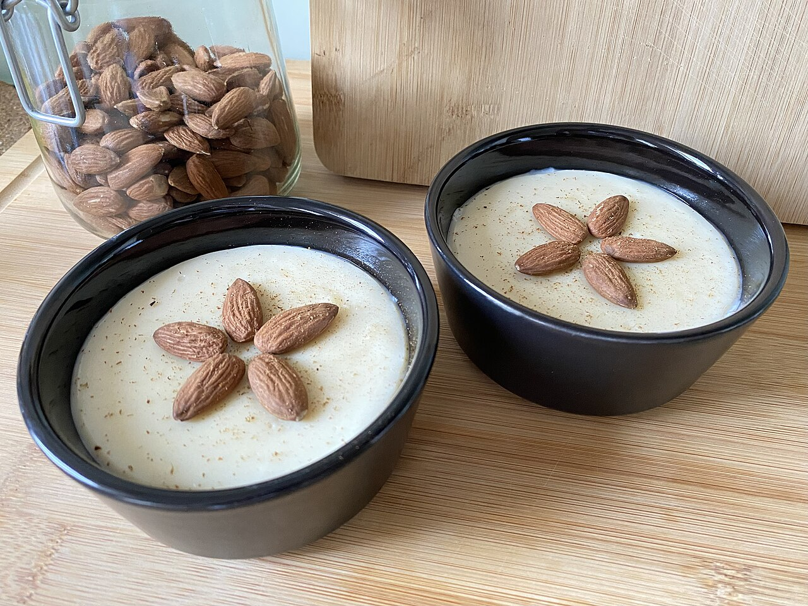

Una crema blanca entre lo dulce y lo histórico
En las confiterías de Reus, en determinadas fechas del año —Pascua, especialmente—, aparece en las vitrinas un postre de aspecto sencillo: una crema blanca servida en tarrina de barro, decorada con unas almendras encima y un toque de canela. Quien lo ve por primera vez podría confundirlo con una natilla o un yogur. No lo es. Es el menjablanc, y tiene más historia encima que muchos platos que hoy llenan cartas de restaurante.
Es una crema elaborada a partir de leche de almendras —no leche de vaca—, espesada con almidón de arroz o maíz, endulzada con azúcar y aromatizada con canela en rama y piel de limón. El resultado es suave, aromático, con una presencia discreta de fruto seco que no necesita competir con nada. Se sirve frío, en tarrina de barro o de test, como siempre se ha hecho.

Del siglo XIV a la confitería de la esquina
La primera referencia documentada del menjablanc aparece en el Llibre de Sent Soví, recetario catalán del año 1324 —uno de los más antiguos de Europa. Entonces, no era un postre. Era un plato principal: un guiso con la carne blanca de la pechuga de gallina, mezclada con leche de almendras, arroz para espesarlo y azúcar. Un plato de cocina de alto standing, reservado a las clases altas que podían permitirse ese tipo de elaboración.
La versión dulce que conocemos hoy se piensa que nació en la Cartoixa de Scala Dei, en el Priorat, cuando los monjes adaptaron las elaboraciones para la Cuaresma: sin leche animal, sin huevos. Sustituyeron ambos por leche de almendras y almidón. El resultado era una crema blanca, limpia, que el territorio aceptó como propia. En el siglo XIX ya aparecía con regularidad en los recetarios domésticos y se aromatizaba con canela y piel de limón, exactamente igual que hoy.
Su consumo se entiende también en contexto: hasta finales del siglo XIX, la leche de vaca no se consideraba segura ni suficientemente estudiada en cuanto a nutrición y conservación. La leche de almendras no era una moda —era la alternativa normal. Y en un territorio como el Baix Camp, una de las zonas de mayor producción de frutos secos del Mediterráneo, las almendras estaban al alcance de cualquier mano.

Reus y el menjablanc: una fidelidad sin aspavientos
Otras ciudades tienen sus postres emblemáticos y los anuncian con grandes campañas. Reus tiene el menjablanc y lo mantiene en silencio, en las vitrinas de las confiterías de toda la vida. La Confiteria Padreny, fundada en 1815, es uno de los establecimientos históricos donde todavía se elabora siguiendo métodos tradicionales. No es el único. Cada Pascua, el postre vuelve a aparecer en las tiendas de la ciudad como si nunca se hubiera marchado.
Más allá de las confiterías, el menjablanc ha dado el salto al mercado en formato de producto de conveniencia: desde 1917, la marca Menjablanc de Reus comercializa sobres y estuches que permiten prepararlo en casa en pocos minutos. Un producto vegano, sin gluten, con certificación internacional. Y también, más recientemente, un licor de menjablanc para quienes prefieren el recuerdo en copa. Ninguna de estas versiones modernas ha desplazado la original. La conviven sin problema.

Menjablanc de Reus
Más de un siglo en el mercado, vegano, sin gluten. La marca que lleva el nombre de la ciudad a las mesas de fuera. Que el producto sea tan longevo no es casualidad: el original merece la pena.
Menjablanc tradicional: con leche de almendras
Esta es la receta auténtica, tal como se preparaba antes de que la leche de vaca se convirtiera en norma. No admite sustituciones en el ingrediente base: la leche de almendras casera es lo que da al menjablanc su sabor particular. Requiere planificación —hay que dejar reposar las almendras— pero el proceso es sencillo y el resultado, inimitable.
- 200 g de almendras crudas peladas
- ½ litro de agua
- 100 g de azúcar
- 25 g de almidón de arroz o maíz
- 1 rama de canela
- 1 tira de piel de limón
- 1 pizca de sal
- Canela en polvo para servir
- Almendras enteras para decorar
- Remojo 6 horas
- Preparación 20 min
- Reposo Mínimo 2 horas en frío
- Servicio Frío, en tarrina de barro
- Dieta Vegano · Sin gluten · Sin lactosa

Un postre que no necesita reivindicarse
Llevamos décadas visitando restaurantes del Camp de Tarragona. Nos hemos sentado en mesas con cartas de muchas páginas y en otras con apenas cuatro platos escritos a mano. Lo que persiste, lo que tiene raíz, no siempre es lo más elaborado. A veces es una crema blanca en una terrina de barro.
El menjablanc es de esos platos que no necesitan defensa. Han sobrevivido siete siglos de modas, guerras, industrialización y tendencias gastronómicas. Han sobrevivido porque son buenos. Y porque Reus ha tenido la inteligencia de no reinventarlos.
Si visitas Reus y no pruebas un menjablanc en una confitería, no has estado del todo en Reus.
Más curiosidades del territorio
 Curiosidades
Curiosidades
El Romesco de Tarragona
Historia, origen y receta de la salsa que define la cocina del Camp de Tarragona. Del Serrallo a las mesas del mundo.
Leer → Curiosidades
Curiosidades
El garum: la salsa que conquistó Roma
Pescado, sal, fermentación y tiempo. El condimento universal que Tarraco fabricaba y exportaba al mundo conocido.
Leer →